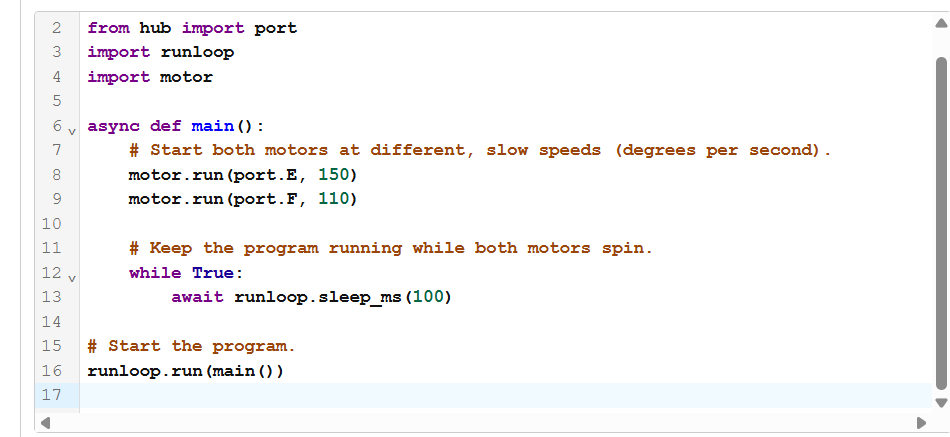
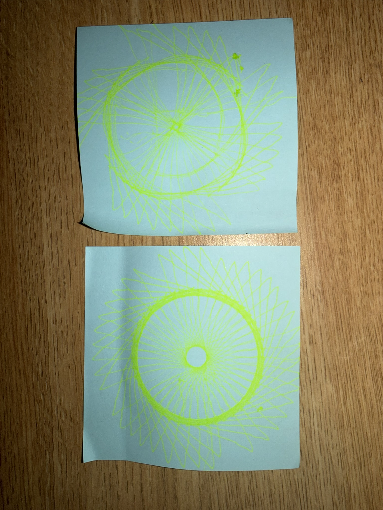

Create geometric artistic designs with rotating motors
My Spirograph in action

Used GPT-6 Luna to code motors to rotate at different speeds
One of the hardest parts of this project was finding a working writing utensil. The provided pen ran out of ink, so I improvised with a highlighter, which the robot arm could write with easily.
Positioning the spinning board was also challenging. I had to align it with the path of the arm as it drew, which took a lot of trial and error.
I'm very pleased with the final result. When the code ran, the machine created interesting artistic shapes on the paper.

Resulting art from the Spirograph